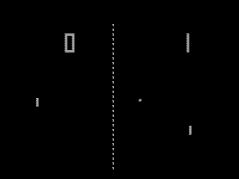
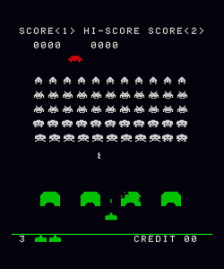

Videojuegos clásicos
🏓 - 👽 - 👻
Pong
Pong (o Tele-Pong) fue un videojuego de la primera generación de
videoconsolas publicado por Atari, creado por
Nolan Bushnell y lanzado el 29 de noviembre de
1972. Pong está basado en el deporte de tenis de mesa (o ping pong). La
palabra Pong es una marca registrada por Atari Interactive, mientras que la palabra genérica "pong" es usada
para
describir el género de videojuegos. La popularidad de Pong dio lugar a una demanda de infracción de patentes y
ganada
por parte de los fabricantes de Magnavox Odyssey, que poseía un juego similar.
Pong es un juego de deportes en dos dimensiones que simula un tenis de mesa. El jugador controla en el juego una paleta moviéndola verticalmente en la parte izquierda de la pantalla, y puede competir tanto contra un oponente controlado por computadora, como con otro jugador humano que controla una segunda paleta en la parte opuesta. Los jugadores pueden usar las paletas para pegarle a la pelota hacia un lado u otro. El objetivo consiste en que uno de los jugadores consiga más puntos que el oponente al finalizar el juego. Estos puntos se obtienen cuando el jugador adversario falla al devolver la pelota.
Pong es un juego de deportes en dos dimensiones que simula un tenis de mesa. El jugador controla en el juego una paleta moviéndola verticalmente en la parte izquierda de la pantalla, y puede competir tanto contra un oponente controlado por computadora, como con otro jugador humano que controla una segunda paleta en la parte opuesta. Los jugadores pueden usar las paletas para pegarle a la pelota hacia un lado u otro. El objetivo consiste en que uno de los jugadores consiga más puntos que el oponente al finalizar el juego. Estos puntos se obtienen cuando el jugador adversario falla al devolver la pelota.

Space Invaders

Space Invaders es un videojuego de arcade diseñado por Toshihiro Nishikado y lanzado al mercado en 1978. Su
objetivo
es eliminar oleadas de alienígenas con un cañón láser y obtener la mayor cantidad de puntos posible.
El juego tiene una estructura muy simple pero apasionante. El jugador controla un cañón que puede moverse a la
derecha
o izquierda y un botón de disparo. Tiene que ir destruyendo los aliens invasores (de los cuales hay tres
tipos: con
forma de calamar, de cangrejo y de pulpo) que van acercándose a la tierra cada vez más rápidamente. Cada
cierto tiempo
aparece en la pantalla, por encima de los invasores, un platillo volador que se mueve aleatoriamente de
derecha a
izquierda o de izquierda a derecha y que no agrega una puntuación definida, sino que los puntos que otorga
cambian
cada vez.
Para tener más éxito en el juego, se debe eliminar la fila que se acerca a uno de los lados del monitor
disparando a
los invasores uno a uno e ir alternando dicho proceso.
Además se tienen cuatro escudos de protección terrestre (más parecidos a búnkeres) que cubren al jugador del
fuego
alienígena, aunque también le dificultan disparar desde detrás de ellos.
Pac-Man
Pac-Man, llamado Comecocos en España, es un videojuego arcade creado por el diseñador de videojuegos Toru Iwatani de
la empresa Namco y lanzado el 21 de mayo de 1980. Se convirtió en un fenómeno mundial en la industria de los
videojuegos, llego a tener el Récord Guiness del videojuego de arcade más exitoso de todos los tiempos con un total de
293.822 máquinas vendidas de 1981 a 1987 y acabó con el dominio de Space Invaders.
El protagonista del videojuego Pac-Man es un círculo amarillo al que le falta un sector por lo que parece tener boca.
Aparece en laberintos donde debe comer puntos pequeños, puntos mayores y otros premios con forma de frutas y otros
objetos. El objetivo del personaje es comer todos los puntos de la pantalla, momento en el que se pasa al siguiente
nivel o pantalla. Sin embargo, cuatro fantasmas o monstruos, Shadow (Blinky), Speedy (Pinky), Bashful (Inky) y Pokey
(Clyde), recorren el laberinto para intentar comerse a Pac-Man. Estos fantasmas son, respectivamente, de colores rojo,
rosa, cyan y naranja.
Hay cuatro puntos más grandes de lo normal situados cerca de las esquinas del laberinto que proporcionan a Pac-Man la
habilidad temporal de comerse a los monstruos (todos ellos se vuelven azules mientras Pac-Man tiene esa habilidad).
Después de haber sido tragados, los fantasmas se regeneran en "casa" (una caja situada en el centro del laberinto).

Última modificación de esta página: 21 de junio de 2018
Basado en textos de la Wikipedia
Basado en textos de la Wikipedia